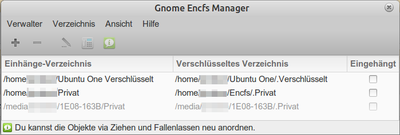

EncFS
Dieser Artikel wurde für die folgenden Ubuntu-Versionen getestet:
Ubuntu 14.04 Trusty Tahr
Zum Verständnis dieses Artikels sind folgende Seiten hilfreich:
EncFS  (Encrypted Filesystem) ist eine Verschlüsselungserweiterung für Unix-artige Dateisysteme, es gibt aber auch eine experimentelle Version für Windows. Mit EncFS kann ein Benutzer ohne Root-Rechte innerhalb kürzester Zeit und ohne großen Aufwand vertrauliche Dateien schützen. Diese werden in versteckten und verschlüsselten Ordnern abgelegt, die mit Passwörtern gegen einen unbefugten Zugriff geschützt sind und vor Benutzung erst eingebunden werden müssen.
(Encrypted Filesystem) ist eine Verschlüsselungserweiterung für Unix-artige Dateisysteme, es gibt aber auch eine experimentelle Version für Windows. Mit EncFS kann ein Benutzer ohne Root-Rechte innerhalb kürzester Zeit und ohne großen Aufwand vertrauliche Dateien schützen. Diese werden in versteckten und verschlüsselten Ordnern abgelegt, die mit Passwörtern gegen einen unbefugten Zugriff geschützt sind und vor Benutzung erst eingebunden werden müssen.
Der einfachen Handhabung steht allerdings auch ein Nachteil gegenüber: Im Vergleich mit anderen Verschlüsselungslösungen ist EncFS relativ langsam. Mit der Möglichkeit, den verwendeten Ordner nach einer gewissen Zeitspanne der Inaktivität automatisch abzumelden, besitzt das Programm aber ein Alleinstellungsmerkmal.
Achtung!
Laut EncFS Security Audit vom 14.01.2014 enthält EncFS in der Version 1.7.4 einige potentielle Schwachstellen. Das Fazit der Prüfung: EncFS ist wahrscheinlich noch sicher, solange ein potentieller Angreifer nur (genau) eine Version der verschlüsselten Daten erhält, wie z.B. bei Diebstahl oder Verlust eines Datenträgers. Kann ein potentieller Angreifer allerdings mehr als eine Version der verschlüsselten Daten einsehen, ist EncFS laut der Sicherheitsprüfung nicht mehr geeignet. Die verbreitete Verwendung von EncFS zur Verschlüsselung von Daten in der Cloud ist ein solcher Risikofall.
Inzwischen wurde die Version 1.8.2 veröffentlicht, leider ohne explizite Anmerkungen oder Hinweise im Changelog bezüglich des Audits (Stand: November 2015). Aus einer Diskussion zur Sicherheit im github Repository geht hervor, dass die kritische Lücke Issue #9 ist und voraussichtlich in Version 2.0 gefixt wird. Eine Version 2.0 wurde zwar angekündigt, aber bisher nicht veröffentlicht.
Installation¶
Folgendes Paket muss installiert [1] werden:
encfs (universe)
 mit apturl
mit apturl
Paketliste zum Kopieren:
sudo apt-get install encfs
sudo aptitude install encfs
Anschließend den aktuellen Benutzer zur Gruppe fuse hinzufügen. Dies geschieht z.B. in einem Terminal [2]:
sudo gpasswd -a $USER fuse newgrp fuse
Verwendung¶
Terminal¶
Die Benutzung von EncFS im Terminal ist schnell und einfach an einem kleinen Beispiel erläutert.
Neues verschlüsseltes Verzeichnis anlegen¶
Mit folgendem Befehl erstellt man ein neues verstecktes Verzeichnis ~/.foobar, in dem die verschlüsselten Daten liegen sollen und ein weiteres Verzeichnis, das als Mountpoint dient. Das verschlüsselte Verzeichnis wird anschließend automatisch eingehängt und der Zugriff erfolgt über den Ordner ~/foobar. Die Verschlüsselung erfolgt dabei "direkt", d.h. sobald eine Datei in den Zugriffsordern (im obigen Beispiel also ~/foobar) kopiert wird, wird diese verschlüsselt und erscheint im versteckten Verzeichnis (im obigen Beispiel ~/.foobar).
encfs ~/.foobar ~/foobar
Um die beiden Verzeichnisse ~/.foobar und ~/foobar zu erstellen, zweimal mit Y bestätigen (auch wenn man in der deutschen Version dazu aufgefordert wird J zu drücken! Siehe Beitrag im Forum).
Anschließend kann man zwischen "Experten-Modus", "Paranoia-Modus" und "Standard-Modus" wählen:
Bitte wählen Sie eine der folgenden Optionen: "x" für den Experten-Modus, "p" für den vorkonfigurierten Paranoia-Modus, etwas anderes oder eine Leerzeile wählt den Standard-Modus. ?>
"Standard-Modus" und "Paranoia-Modus" bitten lediglich um die Eingabe eines Passworts, wobei der Paranoia-Modus eine etwas stärkere Verschlüsselung und einige zusätzliche Sicherheitsfeatures bietet. Der "Experten-Modus" erlaubt den weiter fortgeschrittenen Benutzern die Art der Verschlüsselung zu wählen sowie diverse weitere Optionen zu konfigurieren.
Nach zweimaliger Eingabe des Passworts werden die Verzeichnisse dann erstellt und gemountet. Das eingehängte Verzeichnis sollte nun auf dem Desktop angezeigt werden. Ist dies nicht der Fall oder ist kein Desktop installiert, kann der Befehl
mount | grep "encfs"
zur Erfolgsüberprüfung genutzt werden [2]. Es sollte folgende Zeile zu sehen sein:
encfs on /home/USER/foobar type fuse.encfs (rw,nosuid,nodev,default_permissions,user=USER)
Verzeichnis aushängen¶
EncFS nutzt das FUSE Kernel-Modul zum Ein- und Aushängen von Verzeichnissen. Daher werden diese mit folgendem Befehl ausgehängt:
fusermount -u ~/foobar
Nun ist das Verzeichnis ~/foobar wieder leer.
Verzeichnis einhängen¶
Verzeichnisse werden mit dem selben Befehl eingehängt, mit dem sie auch neu erstellt werden:
encfs ~/.foobar ~/foobar
Nach der Eingabe des Passworts ist das Verzeichnis wieder unter ~/foobar eingehängt.
Nützliche Befehlsoptionen¶
Wie jede Shell-Applikation bietet auch EncFS diverse nützliche Befehlsoptionen:
| nützliche Befehlsoptionen | ||
| Option(en) | Beschreibung | |
-i n oder --idle=n | Diese Option ist vor allem bei der Verwendung von EncFS in Shell-Skripten sehr nützlich. Da das Verzeichnis nach n Minuten der Inaktivität aushängt wird, braucht man nicht zu befürchten, dass es einem unter dem Hintern weg gezogen wird, während man gerade darin arbeitet. Es ist daher empfehlenswert, diese Befehlsoption möglichst immer zu nutzen, um maximale Sicherheit zu gewährleisten. | |
--public | verhält sich wie ein normales Mehrbenutzer-Dateisystem (EncFS muss als root aufgerufen werden) | |
-v oder --verbose | gibt Debug-Nachrichten aus | |
--extpass=... | Passworteingabe über ein externes Programm, z.B. mit Zenity--extpass="zenity --entry --hide-text --text 'Bitte geben Sie das Passwort ein:' --title Passwort-Eingabe" | |
-o allow_other | Option für FUSE, um anderen Benutzern Zugriff auf die entschlüsselten Daten zu geben. Weitere Infos siehe Problembehebung. | |
Beispielskript¶
Dieses Skript legt man als Administrator (mit Root-Rechten) im Ordner /usr/local/bin/ ab. So steht jedem Benutzer auf dem System über den Befehl crypton.sh ein verschlüsseltes Verzeichnis zur Verfügung:
1 2 3 4 | #!/bin/bash # Name : crypton.sh # Description : User script for creating and mounting encfs directories in ~/ encfs -i 1 $HOME/.encfs $HOME/encfs |
Grafische Benutzeroberflächen¶
Cryptkeeper¶
Wem das Ver- und Entschlüsseln der Dateien im Terminal zu kompliziert und/oder zu umständlich ist, der kann auf das komfortable Miniprogramm (Applet) Cryptkeeper zurückgreifen.
Installation¶
cryptkeeper (universe)
mit apturl
Paketliste zum Kopieren:
sudo apt-get install cryptkeeper
sudo aptitude install cryptkeeper
Nach dem Starten des Programms wird Cryptkeeper über ein Symbol im Benachrichtigungsfeld bedient. Möchte man Cryptkeeper mit dem Rechner automatisch starten, sollte man einen Eintrag im Autostart anlegen.
Hinweis:
Damit das Cryptkeeper-Applet unter Unity im Panel sichtbar wird, muss das Programm in eine sogenannte "Whitelist" eintragen werden. Dieses kann u.a. mit dem dconf-editor vorgenommen werden. Das Applet (Vorhängeschloss) wird erst bei der nächsten Anmeldung sichtbar.

Gnome Encfs Manager¶
Eine weitere grafische Oberfläche stellt der Gnome Encfs Manager zur Verfügung. Ein- und Aushängen kann man Verzeichnisse über ein Symbol im Benachrichtigungsfeld oder den Verwalter. Besonders besticht das Programm durch die einfach Bedienung und die Fähigkeit, Verzeichnisse einzuhängen, sobald sie verfügbar sind. So kann bspw. ein verschlüsseltes Verzeichnis auf einem USB-Stick automatisch eingehängt werden, sobald dieser mit dem Rechner verbunden wird. Außerdem werden die Passwörter auf Wunsch im Gnome Schlüsselbund gespeichert.
Adresszeile zum Hinzufügen des PPAs:
ppa:gencfsm/ppa
Hinweis!
Zusätzliche Fremdquellen können das System gefährden.
Ein PPA unterstützt nicht zwangsläufig alle Ubuntu-Versionen. Weitere Informationen sind der  PPA-Beschreibung des Eigentümers/Teams gencfsm zu entnehmen.
PPA-Beschreibung des Eigentümers/Teams gencfsm zu entnehmen.
Damit Pakete aus dem PPA genutzt werden können, müssen die Paketquellen neu eingelesen werden.
gnome-encfs-manager
mit apturl
Paketliste zum Kopieren:
sudo apt-get install gnome-encfs-manager
sudo aptitude install gnome-encfs-manager
KDE¶
Um die Passwortabfrage im Terminal zu umgehen oder die Installation zusätzlicher Pakete zu vermeiden, kann man ein Skript mit folgendem Inhalt anlegen, das die Passworteingabe über KDialog erledigt:
1 2 3 4 | #!/bin/bash #Name :encfs_mount.sh #Erklärung :Bindet encfs ein und fragt das Passwort über Kdialog ab encfs -i 1 --extpass="kdialog --password Passwort?" ~/.foobar ~/foobar |
Das Skript in den Ordner ~/bin speichern (z.B. als encfs_mount.sh) und ausführbar machen [3]. Nun kann man sich in K-Menü einen Eintrag [4] oder mit xbindkeys [5] eine Tastaturkombination anlegen.
Zusätzlich existiert ein Werkzeug für KDE: KEncFS . Ein Paket für Ubuntu 11.04 kann heruntergeladen werden, für andere Ubuntu-Versionen muss man es selbst aus dem Quelltext kompilieren [6].
Problembehebung¶
Kompatibilität zu alten Ubuntu-Versionen¶
Aufgrund von Änderungen der Bibliothek libboost konnten mit Ubuntu 10.10 oder neuer verschlüsselte Ordner nicht mit Ubuntu 10.04 (oder älter) geöffnet werden. Andersherum funktioniert es allerdings.
Passwort ändern¶
Mit dem Befehl
encfsctl passwd ~/.foobar
kann man das Kennwort der verschlüsselten Ordners ändern. Weitere Informationen enthält die Manpage zu encfsctl.
Fehlermeldung, z.B. "Keine Berechtigung"¶
EncFS basiert auf FUSE, wobei per Default nur der aktuelle User Zugriff auf die entschlüsselten Daten hat. Sollen andere User oder aber auch anderer Prozesse wie Samba oder TrueCrypt Zugriff auf die entschlüsselten EncFS Daten haben, muss die FUSE Option -o allow_other in der encfs Befehlszeile mit angegeben werden. Vorraussetzung hierfür ist eine vorherige Änderung der /etc/fuse.conf wie im Artikel FUSE Optionen genau beschrieben wird.
Beispiel für einen encfs Befehl mit der FUSE Option allow_other:
encfs -o allow_other ~/.foobar ~/foobar
Fehlt diese Option, bekommt man eine Fehlermeldung, beispielsweise "Keine Berechtigung" oder "Error: Permission denied:".
Die Fehlermeldung erscheint auch, wenn sich der Stash auf einem verschlüsselten Heimverzeichnis befindet und vor einem Logout/Login ohne Neustart nicht ausgehängt wird.
Links¶
extern¶
EncFS - Wikipedia
Auf Knopfdruck sicher - Dateiverschlüsselung mit EncFS und Cryptkeeper
 - Artikel LinuxUser 07/2010
- Artikel LinuxUser 07/2010EncFS-Verschlüsselung für Dropbox & Ubuntu One
- verschlüsselte Ordner automatisch bei der GNOME-Anmeldung einbinden, Blogbeitrag 04/2010Cryptkeeper for Encrypting User Files
- Artikel über Cryptkeeper unter KDE4, 12/2008Encrypted File System (micro-how-to)
- Erweiterte Optionen erklärt, z.B. wie .encfs6.xml (Schlüssel-Datei) woanders ablegenEncFS Security Audit
(Februar 2014)
- Erstellt mit Inyoka
-
 2004 – 2017 ubuntuusers.de • Einige Rechte vorbehalten
2004 – 2017 ubuntuusers.de • Einige Rechte vorbehalten
Lizenz • Kontakt • Datenschutz • Impressum • Serverstatus -
Serverhousing gespendet von